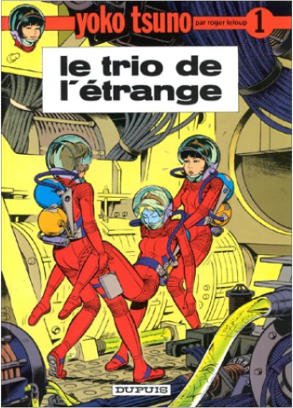

yoko tsuno, tome 1 : Le trio de l'étrangeroger leloup  Chère Yoko... Cette jeune fille est délicieuse, vraiment. Si charmante. Et si douce. Mais qu'on ne s'y trompe pas : la demoiselle a du répondant et de l'imagination à revendre. Pour l'état civil, Yoko Tsuno est japonaise. Pour le C.V., elle est électronicienne. Pour le simple lecteur de BD, c'est une héroïne aussi séduisante que décidée, qui promène sa silhouette gracile entre la terre et la planète Vinéa. Car les aventures de Yoko sont fortement teintées de fantastique et de science-fiction... Dans cet épisode, elle profite d'un séjour en Chine pour voyager dans le temps. Direction le XIème siècle, à la rencontre de la troisième épouse de l'Empereur - une petite fille de six ans... Yoko mêle un graphisme empreint d'une grande douceur et d'une parfaite lisibilité à la description minutieuse de machines ultra-réalistes. Rien d'étonnant : Roger Leloup a longtemps fait partie des studios de Hergé, le créateur de Tintin. Il y a pire école... Une série sympathique et pleine de générosité. —Gilbert Jacques |
 Made with Delicious Library
Made with Delicious LibraryNancy, State zipflap congrotus delicious library Thomas, Julien